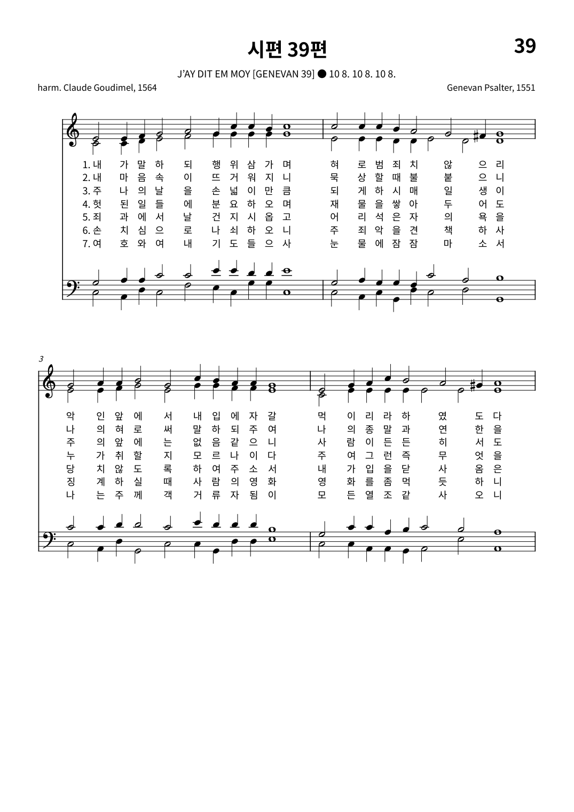
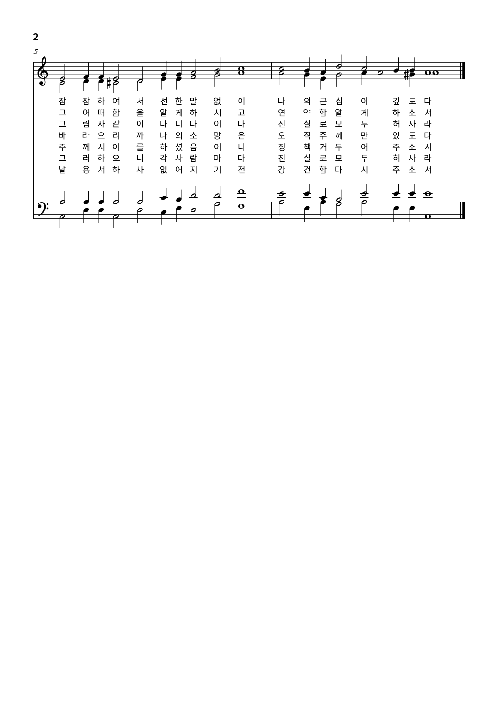

시편 39편
J’AY DIT EM MOY [GENEVAN 39] · 10 8. 10 8. 10 8.
곡조: Genevan Psalter, 1551 · 화성: Claude Goudimel, 1564 · 가사: 개역한글판 시편 39편 편역(AI 초벌 편역판 · 신학 감수 전) · 7절
악보 PDF MusicXML(출력용) MusicXML(반주용, 전주·반복 포함) 개역한글 시편 39편 읽기
악보


가사
1절
내가 말하되 행위 삼가며
혀로 범죄치 않으리
악인 앞에서 내 입에 자갈
먹이리라 하였도다
잠잠하여서 선한 말 없이
나의 근심이 깊도다
내가 말하되 행위 삼가며
혀로 범죄치 않으리
악인 앞에서 내 입에 자갈
먹이리라 하였도다
잠잠하여서 선한 말 없이
나의 근심이 깊도다
2절
내 마음 속이 뜨거워지니
묵상할 때 불붙으니
나의 혀로써 말하되 주여
나의 종말과 연한을
그 어떠함을 알게 하시고
연약함 알게 하소서
내 마음 속이 뜨거워지니
묵상할 때 불붙으니
나의 혀로써 말하되 주여
나의 종말과 연한을
그 어떠함을 알게 하시고
연약함 알게 하소서
3절
주 나의 날을 손 넓이 만큼
되게 하시매 일생이
주의 앞에는 없음 같으니
사람이 든든히 서도
그림자 같이 다니나이다
진실로 모두 허사라
주 나의 날을 손 넓이 만큼
되게 하시매 일생이
주의 앞에는 없음 같으니
사람이 든든히 서도
그림자 같이 다니나이다
진실로 모두 허사라
4절
헛된 일들에 분요하오며
재물을 쌓아 두어도
누가 취할지 모르나이다
주여 그런즉 무엇을
바라오리까 나의 소망은
오직 주께만 있도다
헛된 일들에 분요하오며
재물을 쌓아 두어도
누가 취할지 모르나이다
주여 그런즉 무엇을
바라오리까 나의 소망은
오직 주께만 있도다
5절
죄과에서 날 건지시옵고
어리석은 자의 욕을
당치 않도록 하여 주소서
내가 입을 닫사옴은
주께서 이를 하셨음이니
징책 거두어 주소서
죄과에서 날 건지시옵고
어리석은 자의 욕을
당치 않도록 하여 주소서
내가 입을 닫사옴은
주께서 이를 하셨음이니
징책 거두어 주소서
6절
손 치심으로 나 쇠하오니
주 죄악을 견책하사
징계하실 때 사람의 영화
영화를 좀 먹듯 하니
그러하오니 각 사람마다
진실로 모두 허사라
손 치심으로 나 쇠하오니
주 죄악을 견책하사
징계하실 때 사람의 영화
영화를 좀 먹듯 하니
그러하오니 각 사람마다
진실로 모두 허사라
7절
여호와여 내 기도 들으사
눈물에 잠잠 마소서
나는 주께 객 거류자 됨이
모든 열조 같사오니
날 용서하사 없어지기 전
강건함 다시 주소서
여호와여 내 기도 들으사
눈물에 잠잠 마소서
나는 주께 객 거류자 됨이
모든 열조 같사오니
날 용서하사 없어지기 전
강건함 다시 주소서